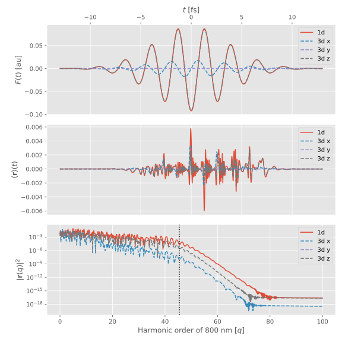
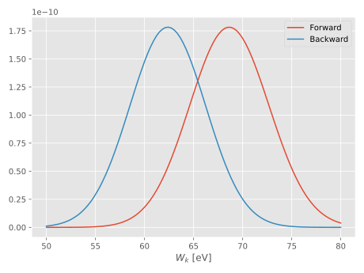
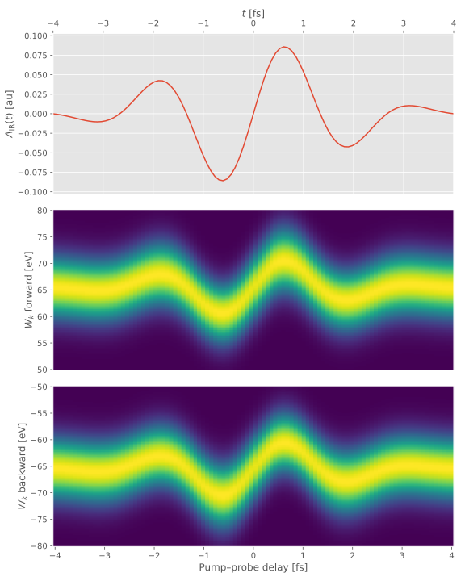

StrongFieldApproximation.jl
Documentation for StrongFieldApproximation.jl.
Hartree atomic units are used throughout, unless otherwise specified.
At the moment, two kind of observables are supported: induced dipole moment and photoelectron spectra. Time integrals are performed numerically, with recursive time integrals limited by a memory, i.e. how many time steps are considered (default is one cycle of the fundamental). Integrals over intermediate photoelectron momenta are performed using the saddle-point method, i.e. given two times, the stationary momentum is given by
\[\saddle{\vec{p}} = -\frac{1}{t_2-t_1} \int_{t_1}^{t_2}\diff{\tau} [\vec{A}(\tau)-\vec{A}(T)],\]
where $\vec{A}(t)$ is the vector potential of the external field, and $T$ is the reference time, at which we usually have $\vec{A}(T)=0$. The integral is thus approximated as
\[\int\diff{\vec{p}} f(\vec{p}) \ce^{-\im S(\vec{p},a,b)} \approx \left[ \frac{2\pi}{\im(a-b) + \epsilon} \right]^{3/2} f(\saddle{\vec{p}}) \ce^{-\im S(\saddle{\vec{p}},a,b)}\]
where
\[S(\vec{p},a,b)\defd -\frac{1}{2} \int_a^b\diff{\tau} [\vec{p}+\vec{A}(\tau)-\vec{A}(T)]^2,\]
and $\epsilon$ is an infinitesimal regulator.
High-order Harmonic Generation (HHG)
julia> @field(F) do # Linear polarization
λ = 800.0u"nm"
I₀ = 3e14u"W/cm^2"
τ = 6.2u"fs"
toff = 10.0u"fs"
tmax = 13.0u"fs"
env = :trunc_gauss
end;
julia> @field(F2) do # Slightly elliptical polarization
λ = 800.0u"nm"
I₀ = 3e14u"W/cm^2"
τ = 6.2u"fs"
toff = 10.0u"fs"
tmax = 13.0u"fs"
env = :trunc_gauss
ξ = 0.2
end;
julia> ndt = 300 # Steps per cycle
300
julia> Iₚ = 0.5 # Hydrogen
0.5
julia> # d will be a vector of scalars
system,diagram,d = induced_dipole(Iₚ, F, ndt, memory=floor(Int, 0.65ndt));
┌ Info: Induced dipole calculation
│ system =
│ 1-channel System:
│ 1. IonizationChannel: Iₚ = 0.5 Ha = 13.6055 eV
│
│ Linearly polarized field with
│ - I₀ = 8.5484e-03 au = 3.0e14 W cm⁻² =>
│ - E₀ = 9.2457e-02 au = 47.5435 GV m⁻¹
│ - A₀ = 1.6234 au
│ – a Fixed carrier @ λ = 800.0000 nm (T = 2.6685 fs, ω = 0.0570 Ha = 1.5498 eV)
│ – and a Truncated Gaussian envelope of duration 256.3165 jiffies = 6.2000 fs (intensity FWHM; turn-off from 10.0000 fs to 13.0000 fs)
│ – Uₚ = 0.6588 Ha = 17.9276 eV => α = 28.5030 Bohr = 1.5083 nm
│ diagram =
│ Goldstone Diagram:
│ |0⟩
│ ╱ ╲⇜
│ 1┃ │𝐤
└
Progress: 100%|███████████████████████████████████████████████████████████████████████████████████████████████████████████████████████| Time: 0:00:00
julia> # d2 will be a vector of 3d vectors
system2,diagram2,d2 = induced_dipole(Iₚ, F2, ndt, memory=floor(Int, 0.65ndt));
┌ Info: Induced dipole calculation
│ system =
│ 1-channel System:
│ 1. IonizationChannel: Iₚ = 0.5 Ha = 13.6055 eV
│
│ Transversely polarized field with
│ - I₀ = 8.5484e-03 au = 3.0e14 W cm⁻² =>
│ - E₀ = 9.2457e-02 au = 47.5435 GV m⁻¹
│ - A₀ = 1.6234 au
│ – a Elliptical carrier with ξ = 0.20 (right) @ λ = 800.0000 nm (T = 2.6685 fs, ω = 0.0570 Ha = 1.5498 eV)
│ – and a Truncated Gaussian envelope of duration 256.3165 jiffies = 6.2000 fs (intensity FWHM; turn-off from 10.0000 fs to 13.0000 fs)
│ – Uₚ = 0.6588 Ha = 17.9276 eV => α = 28.5030 Bohr = 1.5083 nm
│ diagram =
│ Goldstone Diagram:
│ |0⟩
│ ╱ ╲⇜
│ 1┃ │𝐤
└
Progress: 100%|███████████████████████████████████████████████████████████████████████████████████████████████████████████████████████| Time: 0:00:00
The dotted vertical line indicates the classical HHG cut-off:
\[W_k^{\textrm{max}} = 3.17U_p + I_p.\]
Photoelectron Spectra
Attosecond Streaking
Attosecond streaking is a method for measuring, among other things, the vector potential of a ultrashort IR pulse. We can simulate this experiment as follows:
julia> @field(pump) do
ħω = 80u"eV"
I₀ = 1e8u"W/cm^2"
τ = 200u"as"
toff = 400u"as"
tmax = 500u"as"
env = :trunc_gauss
end;
julia> @field(probe) do
λ = 800.0u"nm"
I₀ = 1e12u"W/cm^2"
τ = 2.66u"fs"
toff = 4.0u"fs"
tmax = 5.0u"fs"
env = :trunc_gauss
end;
julia> F = pump + delay(probe, 1.0u"fs");
julia> ndt = 100
100
julia> nk = 100
100
julia> nθ = 2 # Forward and backward spectra only
2
julia> k,kmag,θ = momentum_grid(50u"eV", 80u"eV", nk, nθ,
spacing=:energy);
julia> Iₚ = 14u"eV" # "Krypton"
14 eV
julia> c = photoelectron_spectrum(k, Iₚ, F, ndt);
┌ Info: Photoelectrum spectrum calculation
│ system =
│ 1-channel System:
│ 1. IonizationChannel: Iₚ = 0.5144905104572604 Ha = 13.99980128005251 eV
│
│ ┌ Linearly polarized field with
│ │ - I₀ = 2.8495e-09 au = 1.0e8 W cm⁻² =>
│ │ - E₀ = 5.3380e-05 au = 27.4492 MV m⁻¹
│ │ - A₀ = 0.0000 au
│ │ – a Fixed carrier @ λ = 15.4980 nm (T = 51.6958 as, ω = 2.9399 Ha = 80.0000 eV)
│ │ – and a Truncated Gaussian envelope of duration 8.2683 jiffies = 200.0000 as (intensity FWHM; turn-off from 400.0000 as to 500.0000 as)
│ │ – Uₚ = 0.0000 Ha = 2.2427 neV => α = 0.0000 Bohr = 326.8159 am
│ ⊕
│ │ Linearly polarized field with
│ │ - I₀ = 2.8495e-05 au = 1.0e12 W cm⁻² =>
│ │ - E₀ = 5.3380e-03 au = 2.7449 GV m⁻¹
│ │ - A₀ = 0.0937 au
│ │ – a Fixed carrier @ λ = 800.0000 nm (T = 2.6685 fs, ω = 0.0570 Ha = 1.5498 eV)
│ │ – and a Truncated Gaussian envelope of duration 109.9681 jiffies = 2.6600 fs (intensity FWHM; turn-off from 4.0000 fs to 5.0000 fs)
│ │ – Uₚ = 0.0022 Ha = 59.7587 meV => α = 1.6456 Bohr = 87.0824 pm
│ └ – delayed by 41.3414 jiffies = 1.0000 fs
│
│ diagram =
│ Goldstone Diagram:
│ |0⟩
│ ╱ ╲⇜
│ 1┃ │𝐤
│
└ length(k) = 200
By sweeping the pump–probe delay, we can construct the following streaking spectrogram: 